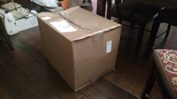
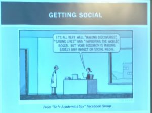
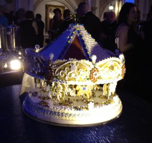
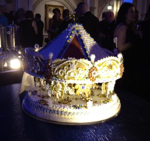
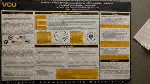
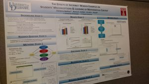
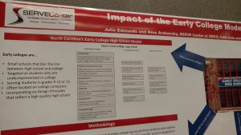
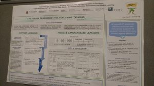
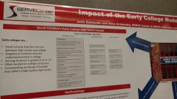
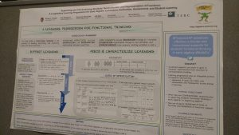

Back to work….Back from break…
 The red shoes made it to work today. I’m ready to tackle the world of innovation and learning!!! What great ideas shall I develop today? I often say – I get paid to think. Rarely does anyone believe me….but as you can see….CLEARLY, I’m thinking. 🙂
The red shoes made it to work today. I’m ready to tackle the world of innovation and learning!!! What great ideas shall I develop today? I often say – I get paid to think. Rarely does anyone believe me….but as you can see….CLEARLY, I’m thinking. 🙂
My government paperweight I mean computer…
 I’m not even sure I need to write anything here. What did they send me, A PONY???? No kidding…there’s a laptop in that box….which won’t work until late February…half the pieces were broken upon arrival because…someone decided to send me a three foot square box with computer parts thrown in. This was not best government thinking skills put to work….sigh….
Contractor Party

What made anyone think putting plates on our heads was a good idea??? Ok, well, I am not good at this party game, I’m afraid. HAHA So while government cannot have parties and cannot pay for them….contractor companies CAN and DO. This is one that was in our contractor’s office…I VOLUNTARILY attended for a bit. Pot luck…just like any company….not too different even in government…except that a) it must be voluntary and b) my work continues, prohibiting me from attending for very long….sigh….

Education Research Sharing

 Today we focus on sharing our research. THIS IS SO IMPORTANT!!!! Only scientists read science journals!! We MUST share with the teachers and the parents what is happening in education research. We must use social media and my goodness – if we are so good at understanding how to teach and share information, then shouldn’t we the best equipped to share and teach about the great ideas flowing out of education research?????
Today we focus on sharing our research. THIS IS SO IMPORTANT!!!! Only scientists read science journals!! We MUST share with the teachers and the parents what is happening in education research. We must use social media and my goodness – if we are so good at understanding how to teach and share information, then shouldn’t we the best equipped to share and teach about the great ideas flowing out of education research?????

AFCEA Gala
How do the government and military galas work, you ask???? Welll…….first, they have to be open to anyone!! BUT government and military are free. Soooo….if you want to support the organization, it’s $400 to attend. At the gala (black tie) you can network with top people across the government and in this case, also military. It was amazing….when you talk to people you realize, these are the decision makers!! What a benefit it is to get to meet such great men and women in the military. Drinks are free…food is light but also free. Mini desserts abound! See below for me getting ready….my drive to the gala….the beautiful scene in the ball room….then up to the Women in Art art gallary for champagne and viewings….and then, of course…a late night spiked cocoa, because it was freezing outside!!!! 🙂 I felt like cinderella!!!!!


 

Education Day!!!


Ever wonder what we do at a scientific meeting???? SCIENCE PROJECTS!! No kidding. There are typically three formats: Tutorial (usually about 2-3 hours), Paper presentation (30 min), or a Poster Presentation (totally like your local science fair but for adults – and they serve cider). 🙂 Today was the annual meeting of the Principal Investigators (lead researchers) for the Institue for Educational Sciences (IES under the Department of Education). If you want to know what’s being researched….click on the pictures and you can read. There are a couple things I noted of concern – 1. Statistics in education need to consider that students have different skills and challenges – not being good at writing doesn’t mean you aren’t good at engineering. 2. Education needs to communicate with military education and training – much of our research overlaps!!! Did you know that?? 3. The early college programs sound good — what happens though when kids graduate early? Is it better for them? Maybe for some – maybe not for others. We should understand better.
    
 
Holiday Parties I mean…collaboration…
ME saying…don’t you even THINK about messing with my budget….
 Stop 1 – The Pentagon Party. What do you do here? Raffles. Meetings. Food. Discussion. I had the privilege to meet the individuals in the Obama administration between the Secretary of Defense and me. Dan Feehan, Principal Deputy Assistant Secretary of Defense (Personnel and Readiness) gave the most moving speech – we were all in tears – about why we serve our country. In this department, our goal is to make sure that our military personnel are ready to defend our great nation – through education, training, and personal and family support. What a tremendous man! I also met other SES folks who reiterated strongly – while the administration is changing, we all support the new president and pray for his success because his success is the country’s success. There is zero animosity presented. I was very surprised…and impressed. Class acts all of them!
Stop 1 – The Pentagon Party. What do you do here? Raffles. Meetings. Food. Discussion. I had the privilege to meet the individuals in the Obama administration between the Secretary of Defense and me. Dan Feehan, Principal Deputy Assistant Secretary of Defense (Personnel and Readiness) gave the most moving speech – we were all in tears – about why we serve our country. In this department, our goal is to make sure that our military personnel are ready to defend our great nation – through education, training, and personal and family support. What a tremendous man! I also met other SES folks who reiterated strongly – while the administration is changing, we all support the new president and pray for his success because his success is the country’s success. There is zero animosity presented. I was very surprised…and impressed. Class acts all of them!
Stop 2 – The Lab party – complete with faux fire – wha?! A VOLUNTARY gathering that allows everyone on the team to connect, discuss what we are doing with our billets (jobs) and to wish everyone well for the upcoming time off. It was great to see so many people from The Lab making progress in other departments — making human capital important!! People Matter!!
Stop 3 – Education Technology Demonstration – I swear, I don’t sleep on this job! What an incredible display!!! The National Science Foundation, the Institute of Educational Sciences, the Department of Defense — all of these groups fund small businesses and companies to build cool new educational games and simulations. The games look great! Many could use more learning science infused in them – meaning, they need to teach in a way the brain can remember and use the information being taught. It’s not enough to be exposed to information, you have to also retain it and be able to apply it. Also, all these companies work alone. We need these games to CONNECT!!
Day at the Pentagon…in my red shoes…

 So it’s like this. The Pentagon is a very large rat maze. One thing that is interesting is that there is a mini city inside. No kidding – you can buy every thing from clothes to jewelry to tampons. Starbucks abound!! Lines are long and security is tight. You can only tell your way around by a special list of numbers and letters that tell you the floor, loop, and then office space. You know when someone is really important….they walk with their head high and straight and people flank either side of them in a V formation. It’s like incoming BIRDS! You must not take pictures and you must hide your electronics in certain offices. Other than that though….it’s like a regular office space! Oh, one more thing – there are pictures of the presidents – GIANT pictures – it’s almost a little creepy. If I were President, I’d want a sideways picture of the mall with all the people in the picture we could put – then I’d be like Where’s Waldo….a spec amongst the masses…
So it’s like this. The Pentagon is a very large rat maze. One thing that is interesting is that there is a mini city inside. No kidding – you can buy every thing from clothes to jewelry to tampons. Starbucks abound!! Lines are long and security is tight. You can only tell your way around by a special list of numbers and letters that tell you the floor, loop, and then office space. You know when someone is really important….they walk with their head high and straight and people flank either side of them in a V formation. It’s like incoming BIRDS! You must not take pictures and you must hide your electronics in certain offices. Other than that though….it’s like a regular office space! Oh, one more thing – there are pictures of the presidents – GIANT pictures – it’s almost a little creepy. If I were President, I’d want a sideways picture of the mall with all the people in the picture we could put – then I’d be like Where’s Waldo….a spec amongst the masses…
The Roosevelt Building
Off to the office today
In my snazzy black coat!
The Roosevelt Building houses the Office of Personnel Management where all the hiring of new government personnel are handled. The deal with Obamacare and hiring freezes. This is a chaotic and busy – and IMPORTANT group these days!!!
The Merit System
On display at the Roosevelt Building